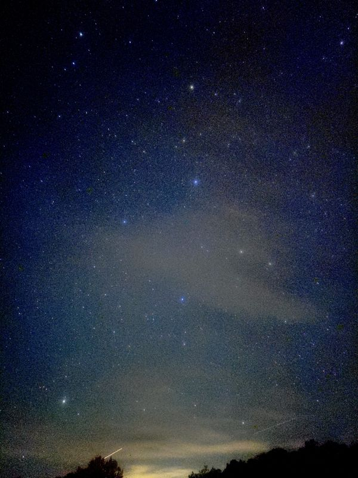
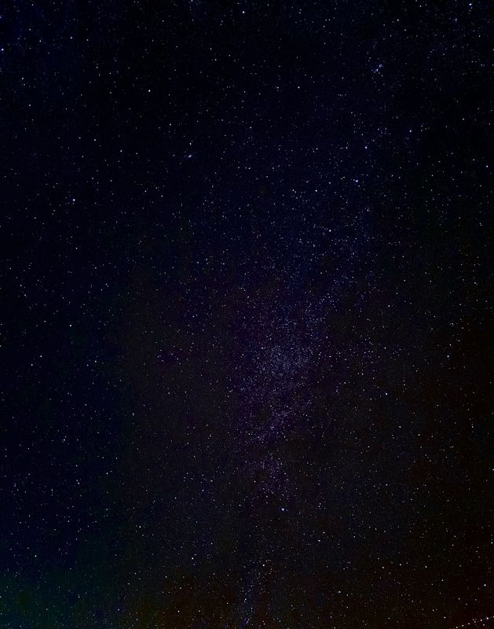
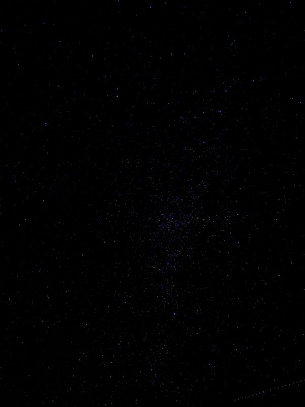

Gallery
Stars
When you get far enough from the city, the sky stops being black and fills in. These were all taken on clear, moonless nights in the high desert around Zion. Tap any photo to see it full size.

Milky Way over Zion
Zion National Park, Utah

Starfield at Dusk
Zion National Park, Utah

Milky Way Rising
Zion National Park, Utah

Deep Night Sky
Zion National Park, Utah